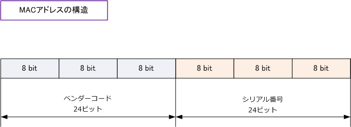
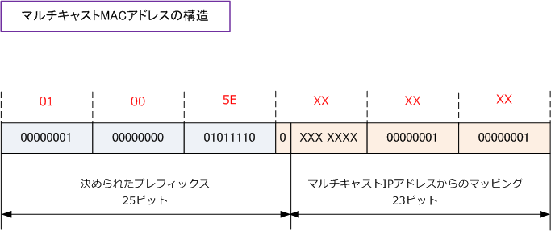
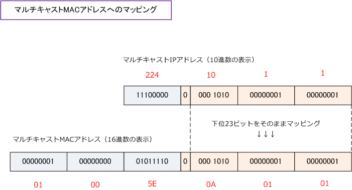
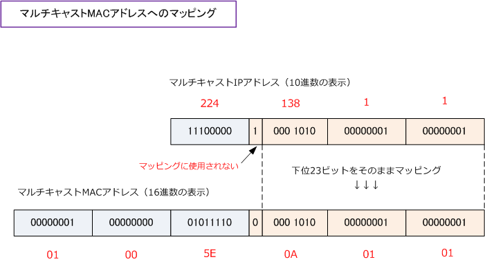

Multicast MAC Address
マルチキャストMACアドレスの構造
マルチキャストMACアドレスは、マルチキャストIPアドレスから導けます。先ずは、MACアドレスの構造を 見てみましょう。NICにあるMACアドレスは下図の通り、24ビットのベンダーコードと24ビットのベンダー のシリアル番号の48ビットで構成されています。

マルチキャストのMACアドレスも同様に48ビットで構成されます。マルチキャストMACアドレスは先頭の 25ビットが「 00000001 00000000 01011110 0 」となっています。残りの23ビットはマルチキャスト IPアドレス下位23ビットを使用することになります。MACアドレスは16進数で表示されるため、先頭の25 ビットは「01-00-5E」ということになります。正確には16進数を表現する 0x をつけて0x01-00-5Eです。

マルチキャストIPアドレスから、マルチキャストMACアドレスへのマッピング
マルチキャストMACアドレスが、マルチキャストIPアドレスの情報からどのように導かれるのかを説明します。
下図では例としてマルチキャストIPアドレス「224.10.1.1」のマルチキャストMACアドレスを導いています。 マルチキャストMACアドレスは先頭の25ビットはすでに決まっているので、残りの23ビットがマルチキャスト IPアドレスからマッピングされることになります。

マルチキャストIPアドレスから、マルチキャストMACアドレスへのマッピング：注意点
上図では「224.10.1.1」のマルチキャストIPアドレスから、マルチキャストMACアドレスを導きました。 それでは、マルチキャストIPアドレスが「224.138.1.1」である場合は、マルチキャストMACアドレスは どのような値になるでしょうか。マッピングルール通り、下位23ビットだけをマッピングさせると以下の 値になることが分かります。つまり「224.10.1.1」と「224.138.1.1」のMACアドレスが同じになります。

下位24ビットをマッピングするのではなく、下位23ビットのみを使用するためこのような結果となります。 以上の通り、マルチキャストIPアドレスとマルチキャストMACアドレスは1対1の対応ではないことを理解 ましょう。なお、マルチキャストIPアドレスとマルチキャストMACアドレスは「32対1」の対応になります。
つまり、1個のマルチキャストMACアドレスで、32個のマルチキャストIPアドレスが相当してしまうので マルチキャストIPアドレスの割り当て設計では、アプリ側で重複が発生しない割り当てが重要となります。 ただし、同じマルチキャストMACアドレスを持つホストが異なるサブネット上にいる場合は問題ないです。